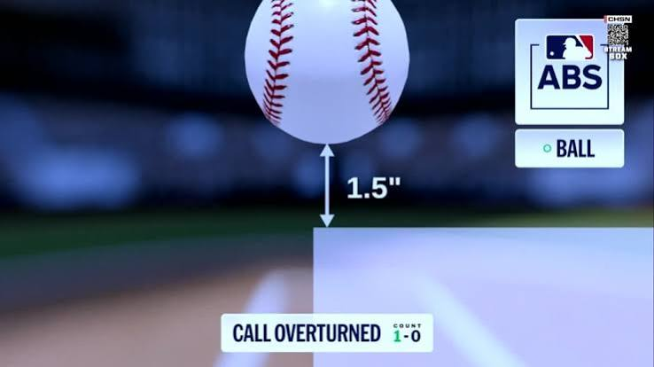
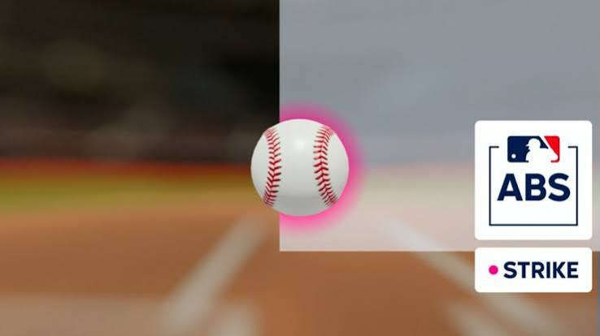

Background & Motivation
The introduction of the Automated Ball-Strike (ABS) Challenge System marks one of the most significant technological evolutions in modern professional baseball history. Until this year, the determination of balls and strikes rested entirely on the subjective judgment of human home plate umpires, leading to inevitable human error and frequent contention between teams and officials. In an era where microscopic margins separate winning from losing, a single missed call can alter the entire trajectory of a game, a postseason race, or even a player's career. To address these inconsistencies and leverage modern tracking technology, Major League Baseball implemented the ABS Challenge System to provide a safety net for teams subjected to inaccurate strike zone judgments. This system, which has been tested in the minor leagues since 2022 and during Spring Training in 2025, allows players to appeal called balls or strikes in real-time, using Hawk-Eye camera technology to definitively determine the pitch's location. The reviews are shown on the scoreboard at the stadium for both the fans and players (as seen below in Figures 1 and 2) within 15 seconds of the appeal being made. The introduction of this technology fundamentally shifts the dynamic of game management, adding an additional element of tactical appeals. Beyond just verifying individual pitches, the system fundamentally changes how fans, players, and executives perceive the fairness and accuracy of professional officiating. Major League Baseball continues to refine rules and leverage new technologies to balance the human element of the sport with improved precision. This technological integration ultimately aims to reward objective performance over arbitrary human error.
The introduction of the ABS Challenge System introduces an intricate layer of game theory and resource management to modern baseball strategy. Teams are strictly constrained to two unsuccessful challenges per game, forcing a delicate balance between immediate tactical aggression and long-term security. Because a challenge can only be initiated by the active batter, catcher, or pitcher via an immediate physical signal, the system demands high situational awareness under extreme temporal pressure. Empirical evidence from this season highlights the severe penalties that sub-optimal resource allocation exerts on team win expectancy. For instance, during a game on July 8, 2026, Los Angeles Dodgers outfielder Alex Call exhausted both of his team's challenge reviews on back-to-back pitches in the bottom of the first inning. This emotional miscalculation left the team structurally defenseless against subsequent umpire errors during the late, high-leverage frames of a close defeat. Conversely, extreme conservatism yields an equally detrimental sunk-cost fallacy where valuable resources are hoarded until they expire. This phenomenon was illustrated in an early-season contest on March 27, 2026, where the Athletics absorbed four distinct missed strike calls in crucial run-scoring environments but refused to challenge out of fear of resource depletion. They ultimately concluded the game with both challenges completely intact, demonstrating that over-conservatism is functionally identical to wasting opportunities. Consequently, identifying the exact spatial, structural, and situational boundary conditions that govern optimal challenge execution represents a critical frontier in sports analytics.


Stakeholders
Research Questions
Player-Level Questions
-
While it has been widely accepted that pitchers shouldn't be challenging, do either batters or catchers show an edge over the other?
-
Do catchers who are more aggressive challenging defensively tend to also be more aggressive challenging as a hitter? Are their offensive and defensive success rates correlated?
-
As the season has progressed, have players improved at challenging? Has their challenge rate increased?
-
Are there specific traits (like high walk rate for batters or strong defensive metrics for catchers) that are strongly correlated with skilled challengers?
Team-Level Questions
-
Is there a correlation between how agressively teams challenge and their overturn rate?
-
As the season has progressed, have teams improved at challenging? Has their challenge rate increased?
-
Can teams be grouped based on their challenge habits, and does their group correlate to their overturn rate?
-
Are teams that have been aggressive challenging pitches on defense more likely to challenge aggressively while batting? Do teams that have a high overturn rate while challenging pitches on defense have a higher overturn rate while batting?
Situational Questions
-
Is there a measurable difference in challenge success rates between home teams and away teams, indicating potential residual crowd biases in human officiating?
-
Can situational metadata predict whether a challenge will be overturned?
-
How does the challenge rate evolve as the game progresses, and how does this impact the overturn rate? Does the pattern change significantly once a team loses their first challenge?
-
Are there situations where challenges that would be overturned are significantly more likely to be passed up on?
Other Questions
-
Are certain umpires challenged more frequently than others? Are certain umpires significantly more prone to missing calls than others?
-
Is there a measurable difference in challenge success rates at specific stadiums, indicating that specific batters eyes could help players?